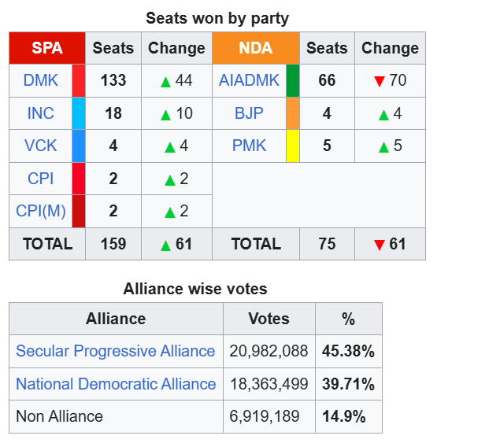

The results were announced by the Election Commission of India on 2 May 2021, starting at 9 AM IST. The DMK won 133 constituencies on its own, receiving a simple majority in the sixteenth Tamil Nadu Legislative Assembly, whereas its SPA alliance saw victory in a total of 159 constituencies. Meanwhile, the NDA alliance captured 75 constituencies, out of which the AIADMK had won 66. Other parties, alliances, and independent candidates did not secure any seats. After spending a decade as the opposition party, the DMK won Tamil Nadu from the AIADMK, which reigned the state for two consecutive terms (2011–2021). The AIADMK assumed the position of the opposition party at the sixteenth Tamil Nadu Legislative Assembly
